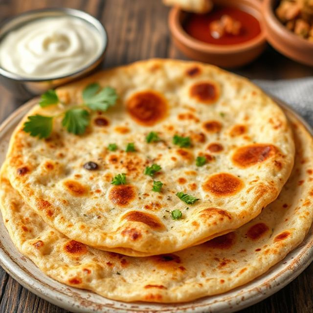

Poha
Light flattened rice cooked with onions & peas.20 mins

Idli & Sambar
Soft steamed rice cakes with tangy lentil soup.30 mins

25 mins
Aloo Paratha with Curd
Stuffed potato flatbread served with yogurt.25 mins

Dal Tadka + Jeera Rice
Yellow lentils with spices, served with cumin rice.30 mins

Paneer Butter Masala + Roti
Creamy tomato curry with cottage cheese.35 mins

Rajma Chawal
-Kidney beans curry with steamed rice.40 mins

Chapati with Mixed Veg Curry
Soft rotis served with a mild vegetable curry.25 mins

Tandoori Roti with Dal Makhani
Smoky flatbread with creamy black lentils.40 mins

Lemon Rice with Papad
Zesty lemon-flavored rice with crispy papad.20 mins

Gajar ka Halwa
Sweet carrot pudding with ghee & nuts.40 mins

Gulab Jamun
Soft fried dumplings soaked in sugar syrup.30 mins

Kheer
Creamy rice pudding with cardamom.35 mins